Detect Vanishing Gradients in Deep Neural Networks by Plotting Gradient Distributions
pytorch
dl
In this notebook, we will explore how vanishing gradients can affect the training of a deep neural network. We will visualize the gradient flow from the deeper to starting layers during the backpropagation for two popular activation functions, Sigmoid and ReLU.
Published
October 23, 2022
Credits
This notebook takes inspiration and ideas from the following sources. * A great post from MATLAB company MathWorks with the same title: Detect Vanishing Gradients in Deep Neural Networks by Plotting Gradient Distributions. That post is written for the MATLAB audience, and I have tried translating its ideas for Python and PyTorch community. * The outstanding book “Deep Learning with PyTorch Step-by-Step” by “Daniel Voigt Godoy”. You can get the book from its website: pytorchstepbystep. In addition, the GitHub repository for this book has valuable notebooks and can be used independently: github.com/dvgodoy/PyTorchStepByStep. Parts of the code you see in this notebook are taken from chapter 3 notebook of the same book. * University of Amsterdam (UvA) Deep Learning Course series. uvadlc.github.io. Their lecture on “activation functions and gradients” discusses the same topic. Here is the link: tutorial3/Activation_Functions.html. The course is outstanding, and lectures and notebooks are also openly shared. From the course site “This course is taught in the MSc program in Artificial Intelligence of the University of Amsterdam. In this course we study the theory of deep learning, namely of modern, multi-layered neural networks trained on big data.”
MathWorks post explains vanishing gradients problem in deep neural networks really well, and I am sharing a passage from it.
A common problem in deep network training is vanishing gradients. Deep learning training algorithms aim to minimize the loss by adjusting the network’s learnable parameters (i.e., weights) during training. Gradient-based training algorithms determine the level of adjustment using the gradients of the loss function with respect to the current learnable parameters. The gradient computation uses the propagated gradients from the previous layers for earlier layers (i.e., from the output layer to the input layer). Therefore, when a network contains activation functions that always produce gradient values less than 1 (e.g., Sigmoid), the value of the gradients can become increasingly small as the updating algorithm moves toward the initial layers. As a result, early layers in the network can receive a vanishingly small gradient, and therefore, the network is unable to learn. However, if the gradient of the activation function is always greater than or equal to 1 (e.g., ReLU), the gradients can flow through the network, reducing the chance of vanishing gradients.
Let’s understand it better by visualizing the gradients produced by Sigmoid and ReLU.
Compare activation functions
In this section we will compare the properties of two popular activation functions: Sigmoid and ReLU.
Sigmoid
Sigmoid function is normally used to refer specifically to the logistic function, also called the logistic sigmoid function. It is defined as
$ Sigmoid(x) = $
ReLU
ReLU function is defined as
$ Relu(x) = max(0,x) $
Visualising activation functions and their gradients
Let’s plot both these functions’ outputs and visualize their gradients. In the next cell, I have created two PyTorch classes that define Sigmoid and ReLU activations.
Code
import torch.nn as nn# A class representing Sigmoid activation functionclass SigmoidAct(nn.Module):def__init__(self):super().__init__()passdef forward(self, x):return1/ (1+ torch.exp(-x))# A class representing ReLU activation functionclass ReluAct(nn.Module):def__init__(self):super().__init__()passdef forward(self, x):return x * (x >0).float()# initialize sigmoid activation functionsigmoid_fn = SigmoidAct()# initialize relu activation functionrelu_fn = ReluAct()
I have defined a helper function to calculate the gradients for these activation functions.
Code
import matplotlib.pyplot as plt# A helper function to computes the gradients of an activation function at specified positions.def get_grads(act_fn, x): x = x.clone().requires_grad_() # Mark the input as tensor for which we want to store gradients out = act_fn(x) out.sum().backward() # Summing results in an equal gradient flow to each element in xreturn x.grad # Accessing the gradients of x by "x.grad"# A helper function to plot the activation function and its gradientdef vis_act_fn(act_fn, fn_name, ax, x):# Run activation function y = act_fn(x) y_grads = get_grads(act_fn, x)# Push x, y and gradients back to cpu for plotting x, y, y_grads = x.cpu().numpy(), y.cpu().numpy(), y_grads.cpu().numpy()# Plotting ax.plot(x, y, linewidth=2, label="Activation function") ax.plot(x, y_grads, linewidth=2, label="Gradient") ax.set_title(fn_name) ax.legend() ax.set_ylim(-1.5, x.max())
We can take the following explanations from the above plots. * The sigmoid output is bounded, as it remains between 0 and 1. The gradients are the highest when the input is close to zero and diminishes as the input value moves away from it. Notice that the sigmoid gradient curve is less than 1 for the entire range; therefore, a network containing sigmoid activation functions can suffer from a vanishing gradients problem. * The output value for ReLU is not bounded. It keeps on increasing on the positive side. And for positive output values, the gradients do not diminish but remain constant at 1. As the gradient is not decreasing, it reduces the chances of the vanishing gradients problem. However, the gradient is zero for negative values, and this state is sometimes referred to as dead ReLU. It means that if ReLU ends up in this situation, it is improbable that it will recover from it. * Why will it not recover? Because the gradient from the activation function is zero for negative inputs, it will also not update the weights during the backward pass, thus leaving the weights in that perpetual state.
In the coming sections, we will build networks and try to visualize how gradients flow between different layers and the effect of activation functions on them.
Section I
I have split the notebook into two sections. In this first section, we will create two multi-layer models: one with sigmoids and the other with ReLU. We will train them on MNIST data and plot their losses. Then in the next section, we will plot their gradients to see how activation functions can affect the behavior of a model.
Download MNIST dataset
MNIST dataset can be downloaded easily from PyTorch built-in datasets provided under torchvision.datasets. In this section, we will download it, split it into train and test datasets, and then convert them into PyTorch tensors. * Read more about the PyTorch MNIST dataset here * torchvision.transforms.Compose is like a container to hold a list of transformations you intend to apply. Read more about it here * torchvision.transforms.ToTensor converts a PIL Image or numpy.ndarray to tensor. It converts a PIL Image or numpy.ndarray (H x W x C) in the range [0, 255] to a torch.FloatTensor of shape (C x H x W) in the range [0.0, 1.0]. Here C=Channel, H=Height, W=Width. Read more about this transformation here
#collapse-outputimport torchvisionimport numpy as nptrain_dataset = torchvision.datasets.MNIST('classifier_data', train=True, download=True)test_dataset = torchvision.datasets.MNIST('classifier_data', train=False, download=True)transform = torchvision.transforms.Compose([ torchvision.transforms.ToTensor()])train_dataset.transform=transformtest_dataset.transform=transformprint(f"Total training images: {len(train_dataset)}")print(f"Shape of an image: {np.shape(train_dataset.data[7])}")
Downloading http://yann.lecun.com/exdb/mnist/train-images-idx3-ubyte.gz
Downloading http://yann.lecun.com/exdb/mnist/train-images-idx3-ubyte.gz to classifier_data/MNIST/raw/train-images-idx3-ubyte.gz
Extracting classifier_data/MNIST/raw/train-images-idx3-ubyte.gz to classifier_data/MNIST/raw
Downloading http://yann.lecun.com/exdb/mnist/train-labels-idx1-ubyte.gz
Downloading http://yann.lecun.com/exdb/mnist/train-labels-idx1-ubyte.gz to classifier_data/MNIST/raw/train-labels-idx1-ubyte.gz
Extracting classifier_data/MNIST/raw/train-labels-idx1-ubyte.gz to classifier_data/MNIST/raw
Downloading http://yann.lecun.com/exdb/mnist/t10k-images-idx3-ubyte.gz
Downloading http://yann.lecun.com/exdb/mnist/t10k-images-idx3-ubyte.gz to classifier_data/MNIST/raw/t10k-images-idx3-ubyte.gz
Extracting classifier_data/MNIST/raw/t10k-images-idx3-ubyte.gz to classifier_data/MNIST/raw
Downloading http://yann.lecun.com/exdb/mnist/t10k-labels-idx1-ubyte.gz
Downloading http://yann.lecun.com/exdb/mnist/t10k-labels-idx1-ubyte.gz to classifier_data/MNIST/raw/t10k-labels-idx1-ubyte.gz
Extracting classifier_data/MNIST/raw/t10k-labels-idx1-ubyte.gz to classifier_data/MNIST/raw
Total training images: 60000
Shape of an image: torch.Size([28, 28])
From the above cell output, there are 60,000 training images. The shape of each image is 28 x 28, which means it is a 2D matrix.
### plot a single imageimport matplotlib.pyplot as pltplt.imshow(train_dataset.data[7], cmap='gray')
<matplotlib.image.AxesImage at 0x7fb77b73b590>
Load generated data into PyTorch Dataset and DataLoader class
Now let’s load our data into Dataset and DataLoader classes. PyTorch Dataset is a helper class that converts data and labels into a list of tuples. DataLoader is another helper class to create batches from Dataset tuples. batch_size means the number of tuples we want in a single batch. We have used 128 here, so each fetch from DataLoader will give us a list of 128 tuples.
import torchfrom torch.utils.data import Dataset, DataLoader, random_splittrain_size=len(train_dataset)# Randomly split the data into non-overlapping train and validation set# train size = 70% and validation size = 30%train_data, val_data = random_split(train_dataset, [int(train_size*0.7), int(train_size - train_size*0.7)])batch_size=128# Load data into DataLoader classtrain_loader = torch.utils.data.DataLoader(train_dataset, batch_size=batch_size)valid_loader = torch.utils.data.DataLoader(val_data, batch_size=batch_size)print(f"Batches in Train Loader: {len(train_loader)}")print(f"Batches in Valid Loader: {len(valid_loader)}")print(f"Examples in Train Loader: {len(train_loader.sampler)}")print(f"Examples in Valid Loader: {len(valid_loader.sampler)}")
Batches in Train Loader: 469
Batches in Valid Loader: 141
Examples in Train Loader: 60000
Examples in Valid Loader: 18000
Define a class to implement training, validation, and mini-batch processing pipeline
In this section we will implement a class that encapsulates all the usual steps required in training a PyTorch model. This way we can focus more on the model architecture and performance, and less concerned about the boilerplate training loop. Important parts of this class are * __init__: Class constructor to define the main actors in a training cycle including model, optimizer, loss function, training and validation DataLoaders * _make_train_step_fn: Training pipeline is usually called “training step” which includes the following steps 1. Compute our model’s predicted output - the forward pass 2. Compute the loss 3. Compute gradients i.e., find the direction and scale to update the weights to reduce the loss 4. Update weight parameters using gradients and the learning rate * _make_val_step_fn: Validation pipeline is usually called the “validation step” which includes the following steps 1. Compute our model’s predicted output - the forward pass 2. Compute the loss 3. Note that during validation, we are only concerned about the loss, i.e., how well our model performs on the validation dataset. Therefore, we don’t use it to calculate the gradients. * _mini_batch: It defines the steps to process a single minibatch in a helper function. For a mini-batch processing, we want to 1. Get the next batch of data and labels (x, y) from the DataLoader iterator 2. Perform a step on the batch. A step can be either training or validation 3. Compute the average batch loss * train: Execute training and validation steps for given number of epoch * predict: Make a prediction from model on provided data
Code
class DeepLearningPipeline(object):def__init__(self, model, loss_fn, optimizer):# Here we define the attributes of our class# We start by storing the arguments as attributes # to use them laterself.model = modelself.loss_fn = loss_fnself.optimizer = optimizerself.device ='cuda'if torch.cuda.is_available() else'cpu'# Let's send the model to the specified device right awayself.model.to(self.device)# These attributes are defined here, but since they are# not informed at the moment of creation, we keep them Noneself.train_loader =Noneself.val_loader =Noneself.writer =None# These attributes are going to be computed internallyself.losses = []self.val_losses = []self.total_epochs =0self.grad = []# Creates the train_step function for our model, # loss function and optimizer# Note: there are NO ARGS there! It makes use of the class# attributes directlyself.train_step_fn =self._make_train_step_fn()# Creates the val_step function for our model and lossself.val_step_fn =self._make_val_step_fn()def set_loaders(self, train_loader, val_loader=None):# This method allows the user to define which train_loader (and val_loader, optionally) to use# Both loaders are then assigned to attributes of the class# So they can be referred to laterself.train_loader = train_loaderself.val_loader = val_loaderdef _make_train_step_fn(self):# This method does not need ARGS... it can refer to# the attributes: self.model, self.loss_fn and self.optimizer# Builds function that performs a step in the train loopdef perform_train_step_fn(x, y):# Sets model to TRAIN modeself.model.train()# Step 1 - Computes our model's predicted output - forward pass yhat =self.model(x)# Step 2 - Computes the loss loss =self.loss_fn(yhat, y)# Step 3 - Computes gradients for both "a" and "b" parameters loss.backward()# Step 4 - Updates parameters using gradients and the learning rateself.optimizer.step()self.optimizer.zero_grad()# Returns the lossreturn loss.item()# Returns the function that will be called inside the train loopreturn perform_train_step_fndef _make_val_step_fn(self):# Builds function that performs a step in the validation loopdef perform_val_step_fn(x, y):# Sets model to EVAL modeself.model.eval()# Step 1 - Computes our model's predicted output - forward pass yhat =self.model(x)# Step 2 - Computes the loss loss =self.loss_fn(yhat, y)# There is no need to compute Steps 3 and 4, # since we don't update parameters during evaluationreturn loss.item()return perform_val_step_fndef _mini_batch(self, validation=False):# The mini-batch can be used with both loaders# The argument `validation`defines which loader and # corresponding step function is going to be usedif validation: data_loader =self.val_loader step_fn =self.val_step_fnelse: data_loader =self.train_loader step_fn =self.train_step_fnif data_loader isNone:returnNone# Once the data loader and step function, this is the # same mini-batch loop we had before mini_batch_losses = []for x_batch, y_batch in data_loader: x_batch = x_batch.to(self.device) y_batch = y_batch.to(self.device) mini_batch_loss = step_fn(x_batch, y_batch) mini_batch_losses.append(mini_batch_loss) loss = np.mean(mini_batch_losses)return lossdef set_seed(self, seed=42): torch.backends.cudnn.deterministic =True torch.backends.cudnn.benchmark =False torch.manual_seed(seed) np.random.seed(seed)def train(self, n_epochs, seed=42):# To ensure reproducibility of the training processself.set_seed(seed)for epoch inrange(n_epochs):# Keeps track of the numbers of epochs# by updating the corresponding attributeself.total_epochs +=1# inner loop# Performs training using mini-batches loss =self._mini_batch(validation=False)self.losses.append(loss)########################### get grad at the end of each epoch imgs, labels =next(iter(self.train_loader)) imgs, labels = imgs.to(device), labels.to(device)# Pass one batch through the network, and calculate the gradients for the weightsself.model.zero_grad() preds =self.model(imgs) loss = torch.nn.functional.cross_entropy(preds, labels) loss.backward()# We limit our visualization to the weight parameters and exclude the bias to reduce the number of plots grads = { name: params.grad.data.view(-1).cpu().clone().numpy()for name, params inself.model.named_parameters()if"weight"in name }self.model.zero_grad()self.grad.append(grads)########################### VALIDATION# no gradients in validation!with torch.no_grad():# Performs evaluation using mini-batches val_loss =self._mini_batch(validation=True)self.val_losses.append(val_loss)# If a SummaryWriter has been set...ifself.writer: scalars = {'training': loss}if val_loss isnotNone: scalars.update({'validation': val_loss})# Records both losses for each epoch under the main tag "loss"self.writer.add_scalars(main_tag='loss', tag_scalar_dict=scalars, global_step=epoch)print(f"epoch: {epoch:3}, train loss: {loss:.5f}, valid loss: {val_loss:.5f}")ifself.writer:# Closes the writerself.writer.close()def predict(self, x):# Set is to evaluation mode for predictionsself.model.eval() # Takes aNumpy input and make it a float tensor x_tensor = torch.as_tensor(x).float()# Send input to device and uses model for prediction y_hat_tensor =self.model(x_tensor.to(self.device))# Set it back to train modeself.model.train()# Detaches it, brings it to CPU and back to Numpyreturn y_hat_tensor.detach().cpu().numpy()def plot_losses(self): fig = plt.figure(figsize=(10, 4)) plt.plot(self.losses, label='Training Loss', c='b') plt.plot(self.val_losses, label='Validation Loss', c='r') plt.yscale('log') plt.xlabel('Epochs') plt.ylabel('Loss') plt.legend() plt.tight_layout()return fig
Create a model with sigmoid activations
Let’s define a fully connected 4 layers model with only sigmoid activations.
import torch.optim as optim# learning ratelr =0.001# Defines a SGD optimizer to update the parametersoptimizer_sigmoid = optim.SGD(model_sigmoid.parameters(), lr=lr)# Defines a BCE loss functionloss_fn = nn.CrossEntropyLoss()
lr =0.001# Defines a SGD optimizer to update the parametersoptimizer_relu = optim.SGD(model_relu.parameters(), lr=lr)# Defines a BCE loss functionloss_fn = nn.CrossEntropyLoss()
This section will be more interesting than the last one. Here we will visualize and plot gradients from the trained models and understand their meanings.
Gradients for a model with Sigmoid activations
Let’s create a helper function that will plot the gradients for all the weights from each epoch. Note that our models have 4 layers, with L1 being the input layer and L4 being the output layer. Information flows from L1 to L4 during the forward pass. During the backward pass, gradients are calculated from the output layer (L4) and move toward the input layer (L1).
Code
import seaborn as snsdef plot_gradients(grads, epoch=0):""" Args: net: Object of class BaseNetwork color: Color in which we want to visualize the histogram (for easier separation of activation functions) """ grads = grads# Plotting columns =len(grads) fig, ax = plt.subplots(1, columns, figsize=(columns *3.5, 2.5)) fig_index =0for key in grads: key_ax = ax[fig_index % columns] sns.histplot(data=grads[key], bins=30, ax=key_ax, kde=True) key_ax.set_title(str(key)) key_ax.set_xlabel("Grad magnitude", fontsize=11) fig_index +=1 fig.suptitle(f"Epoch: {epoch}", fontsize=16, y=1.05 ) fig.subplots_adjust(wspace=0.45) plt.show() plt.close()
Plot the gradients for model with sigmoid activations.
for i inrange(len(dlp_sigmoid.grad)): plot_gradients(dlp_sigmoid.grad[i], i)
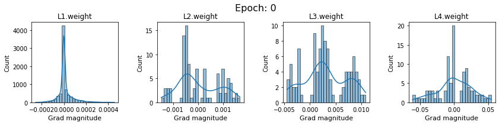
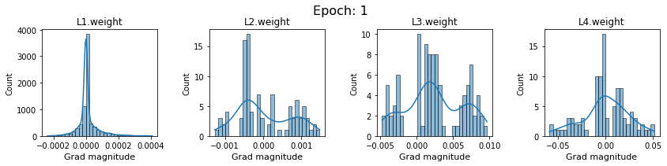
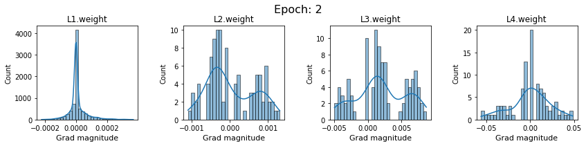
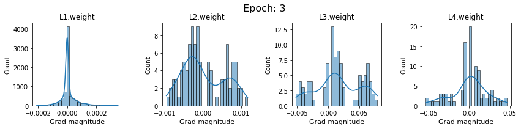
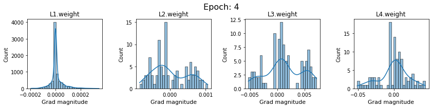
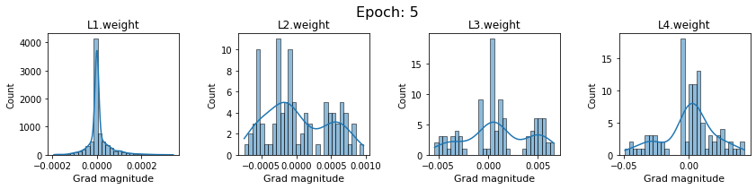
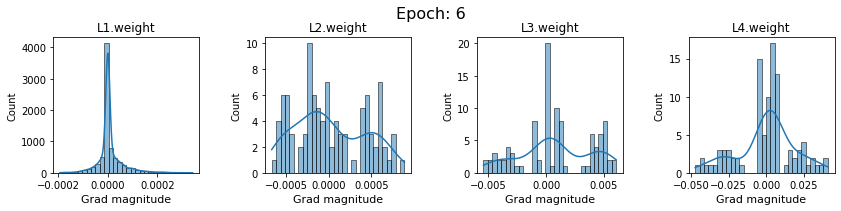
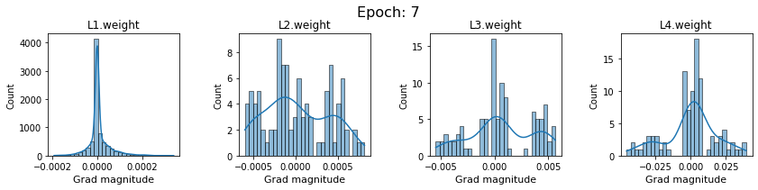
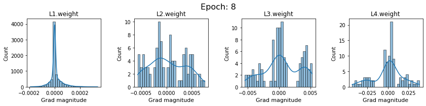
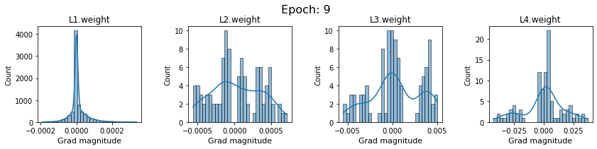
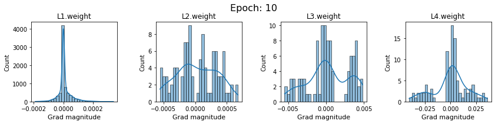
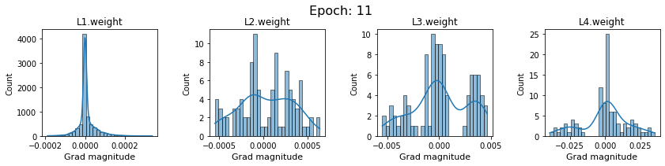
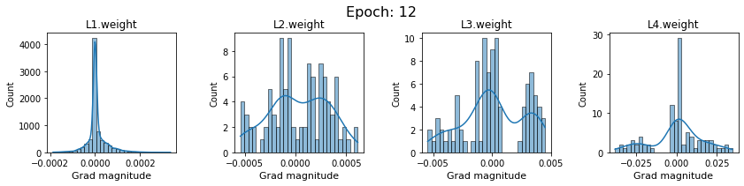
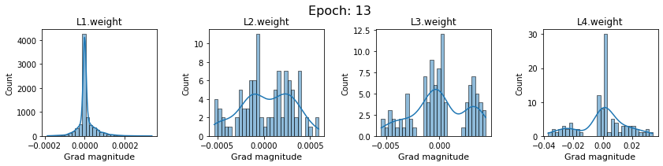
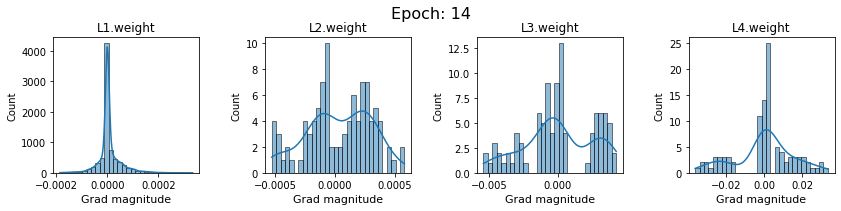
What do we get from these plots?
Issues
In this section, we will discuss the issues we can identify from these gradient plots for our SigmoidNet
Issue 1: Look closely at how the Grad magnitude scale changes from L4 to L1 in an epoch. It is diminishing at an exponential rate. This tells us that the gradient is very high at the output layer but diminishes till it reaches L1.
Issue 2: Gradient is also spread out and not smoother. This is a bad sign because it shows that different areas of the weight layer produce gradients in different ranges. For example, from L4 plot in the last epoch, we can see that the gradients are making clusters around -0.02, 0, and 0.02. We can also find that the gradient mean is not centered around 0. Either it is on the left of 0, or right, or has multiple peaks.
Possible explanations
Issue 1 Reason: Our network is facing Diminishing Gradient problem. I have pasted below another plot for Sigmoid. Image source
sigmoid.png
From this plot, we can see that the highest gradient produced by sigmoid is 0.25. So during backpropagation, when we calculate derivatives for deeper layers (L1, L2), there is a chain reaction where smaller and smaller numbers (less than 0.25) are multiplied to produce even smaller numbers. The result is that gradients diminish, and the weights are barely updated in deeper layers during the backward pass. We can avoid this by using a different activation function (e.g., ReLU) in hidden layers. We will do that in Section II.
Issue 2 Reason: This is due to an initial weight initialization mismatch with the activation function used. By default, PyTorch uses kaiming initialization (Ref here) that works well for ReLU but not for sigmoid. It’s recommended to use Tanh or Xavior for sigmoid.
Can we improve our SigmoidNet?
Let’s train another SigmoidNet with the same configuration but with xavior initialization , and observe how it behaves now.
#collapse-outputmodel_sigmoid_v1 = SigmoidNetmodel_sigmoid_v1 = model_sigmoid_v1.to(device)# define a function to initialize weight with xavier uniform distributiondef init_weights(m):ifisinstance(m, nn.Linear): torch.nn.init.xavier_uniform_(m.weight)# m.bias.data.fill_(0.01)# reset model weights with xavierwith torch.no_grad(): model_sigmoid_v1.apply(init_weights)lr =0.001optimizer_sigmoid = optim.SGD(model_sigmoid_v1.parameters(), lr=lr)loss_fn = nn.CrossEntropyLoss()n_epochs =15dlp_sigmoid_v1 = DeepLearningPipeline(model_sigmoid_v1, loss_fn, optimizer_sigmoid)dlp_sigmoid_v1.set_loaders(train_loader, valid_loader)dlp_sigmoid_v1.train(n_epochs)
### SigmoidNet gradients with xavior initializationfor i inrange(len(dlp_sigmoid_v1.grad)): plot_gradients(dlp_sigmoid_v1.grad[i], i)
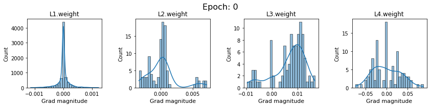
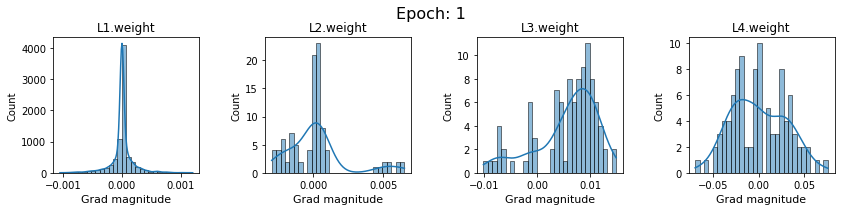
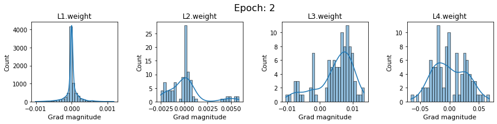
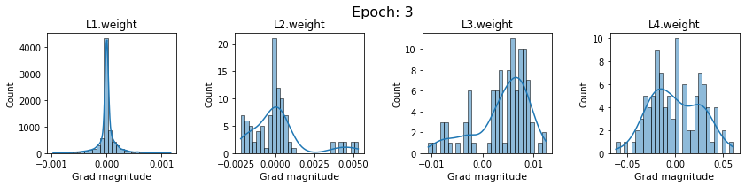
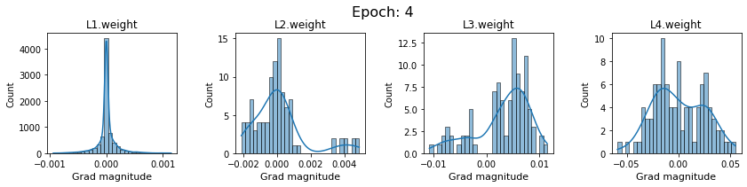
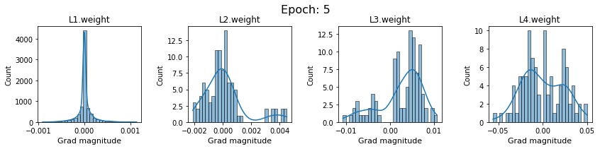
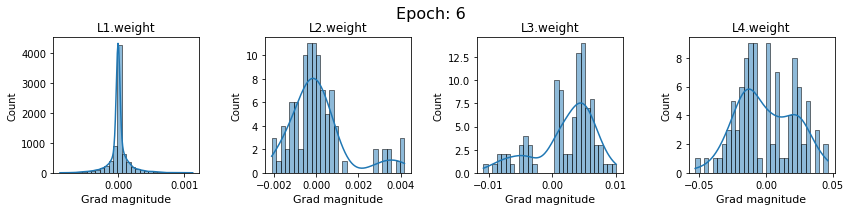
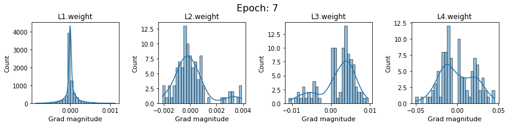
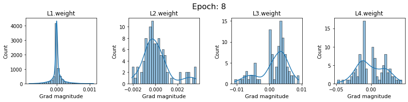
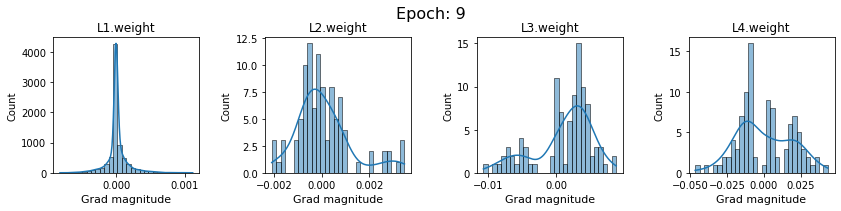
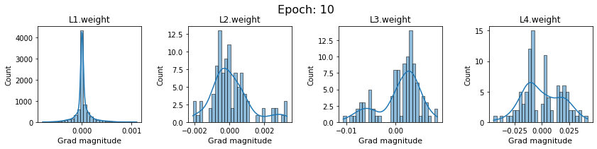
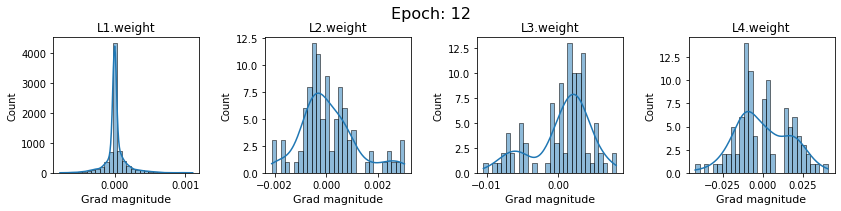
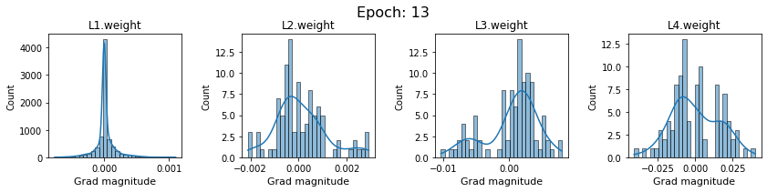
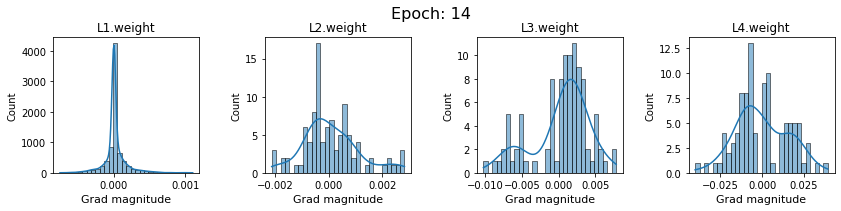
Now the plots are much smoother. Though the network is still suffering from diminishing gradients.
Ridge plot for gradients
In this section, we will use ridge plots for gradients. They provide a better perspective on how gradients evolve during epochs.
Code
import pandas as pd# A helper function to get gradients of a weight layer for all epochs.def get_layer_gradients(layer_name, layer_grads): df = pd.DataFrame(columns=['x','g'])for i inrange(len(layer_grads)): temp = {'x': layer_grads[i][layer_name], # x --> gradients'g': i # g --> epochs } epoch_df = pd.DataFrame(temp) df = df.append(epoch_df, ignore_index=True)return df
# Another helper function to create the ridge plotsdef plot_gradients_ridge_v1(df, layer_name): sns.set_theme(style="white", rc={"axes.facecolor": (0, 0, 0, 0)})# Initialize the FacetGrid object pal = sns.cubehelix_palette(10, rot=-.25, light=.7) g = sns.FacetGrid(df, row="g", hue="g", aspect=15, height=.5, palette=pal)# Draw the densities in a few steps g.map(sns.kdeplot, "x", bw_adjust=.5, clip_on=False, fill=True, alpha=1, linewidth=1.5) g.map(sns.kdeplot, "x", clip_on=False, color="w", lw=2, bw_adjust=.5)# passing color=None to refline() uses the hue mapping g.refline(y=0, linewidth=2, linestyle="-", color=None, clip_on=False)# Define and use a simple function to label the plot in axes coordinatesdef label(x, color, label): ax = plt.gca() ax.text(0, .2, label, fontweight="bold", color=color, ha="left", va="center", transform=ax.transAxes) g.map(label, "x")# Set the subplots to overlap g.figure.subplots_adjust(hspace=-.25) g.fig.suptitle(layer_name, ha='left', fontsize=16, fontweight=16)# Remove axes details that don't play well with overlap g.set_titles("") g.set(yticks=[], ylabel="") g.despine(bottom=True, left=True)return g
Create plots for all weight layer.
Code
# https://stackoverflow.com/questions/35042255/how-to-plot-multiple-seaborn-jointplot-in-subplotimport warningsimport matplotlib.image as mpimgwarnings.filterwarnings("ignore")g1 = plot_gradients_ridge_v1(df0_sigmoid_v1, weight_layers_sigmoid_v1[0])g2 = plot_gradients_ridge_v1(df1_sigmoid_v1, weight_layers_sigmoid_v1[1])g3 = plot_gradients_ridge_v1(df2_sigmoid_v1, weight_layers_sigmoid_v1[2])g4 = plot_gradients_ridge_v1(df3_sigmoid_v1, weight_layers_sigmoid_v1[3])g1.savefig('g1.png')plt.close(g1.fig)g2.savefig('g2.png')plt.close(g2.fig)g3.savefig('g3.png')plt.close(g3.fig)g4.savefig('g4.png')plt.close(g4.fig)############### 3. CREATE YOUR SUBPLOTS FROM TEMPORAL IMAGESf, axarr = plt.subplots(2, 2, figsize=(25, 16))axarr[0,0].imshow(mpimg.imread('g1.png'))axarr[0,1].imshow(mpimg.imread('g2.png'))axarr[1,0].imshow(mpimg.imread('g3.png'))axarr[1,1].imshow(mpimg.imread('g4.png'))# turn off x and y axis[ax.set_axis_off() for ax in axarr.ravel()]plt.tight_layout()plt.show()
What do we get from these ridge plots?
It also shows that the network is suffering from diminishing gradients. gradient scale ‘x’ is decreasing exponentially between weight layers
It shows that gradients are very spread out at the start. They keep on saturating till around epoch 10. After that, instead of getting more saturated around zero, multiple peaks start to emerge. This could be due to our learning rate. In the later epochs, our weights start to oscillate around zero. We can avoid this by using an adaptive learning rate that decreases when weights are near the global minimum.
Gradients for a model with ReLU activations
In this section we will visualize gradients for our model with ReLU activations.
for i inrange(len(dlp_relu.grad)): plot_gradients(dlp_relu.grad[i], i)
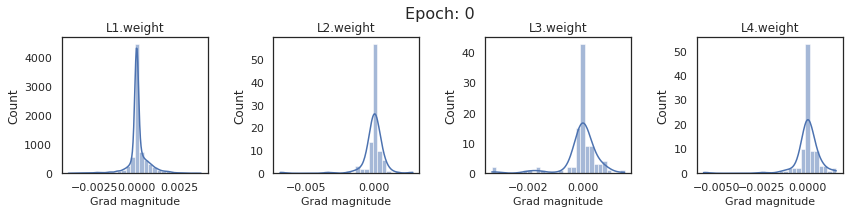
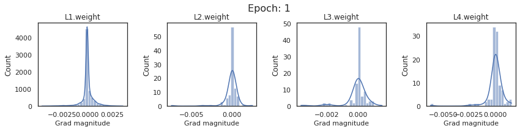
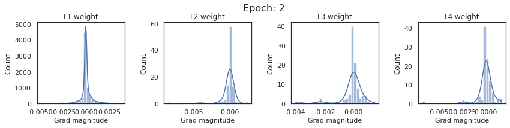
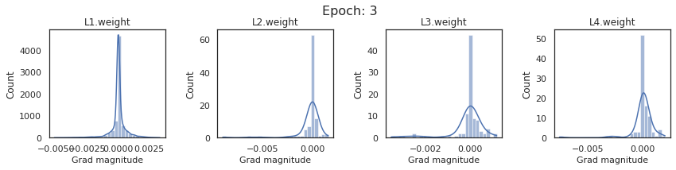
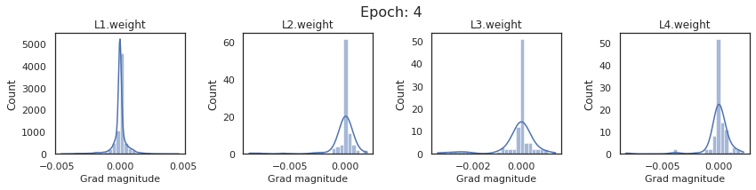
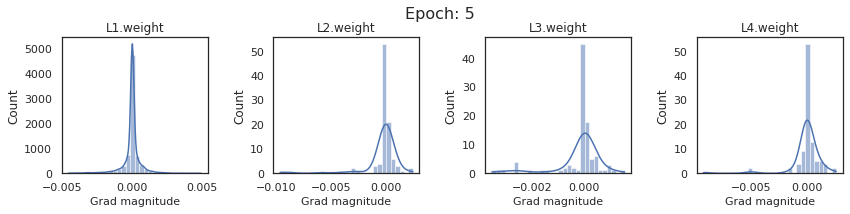
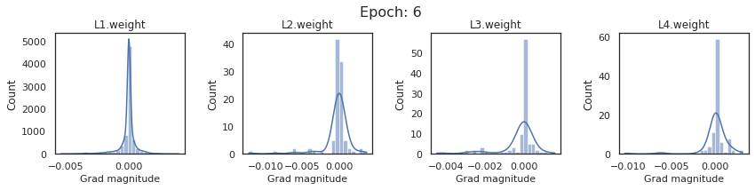
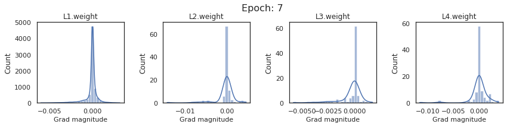
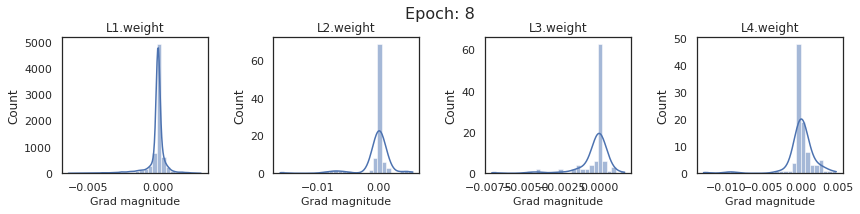
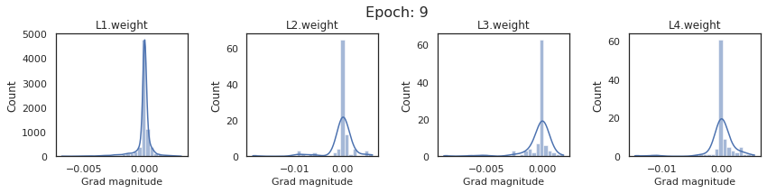
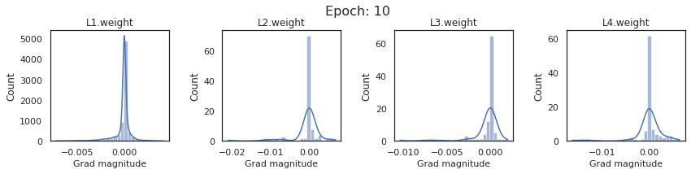
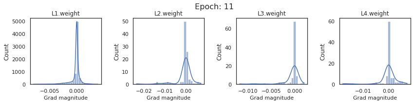
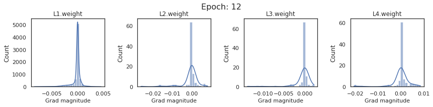
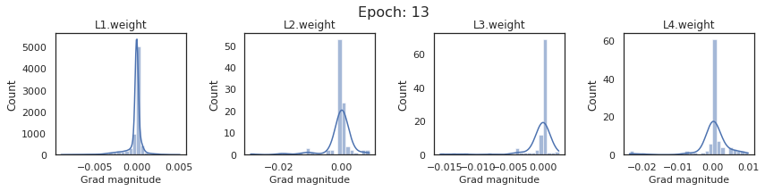
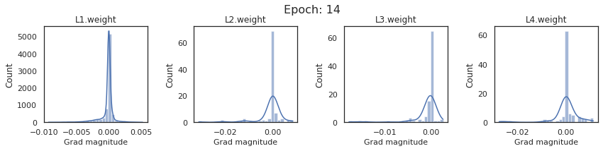
What do we get from these plots?
This time, the gradient curves are nice and smooth. They are not diminishing between weight layers.
Gradients are shrinking between epochs. This means that learning is slowing down in later epochs, and we need to increase the learning rate.
Ridge plot for gradients
Let’s also do ridge plots for ReluNet.
Code
# a helper function relu ridge plots. # same as 'plot_gradients_ridge_v1' but with added limitsdef plot_gradients_ridge_v2(df, layer_name): sns.set_theme(style="white", rc={"axes.facecolor": (0, 0, 0, 0)})# Initialize the FacetGrid object pal = sns.cubehelix_palette(10, rot=-.25, light=.7) g = sns.FacetGrid(df, row="g", hue="g", aspect=15, height=3.5, palette=pal, sharex=False, xlim=(-0.01,0.01)) ## works best# g = sns.FacetGrid(df, row="g", hue="g", aspect=7, height=3.5, palette=pal)#, sharex=False, xlim=(-0.01,0.01)) ## works good# Draw the densities in a few steps g.map(sns.kdeplot, "x", bw_adjust=.5, clip_on=True, fill=True, alpha=1, linewidth=1.5) g.map(sns.kdeplot, "x", clip_on=True, color="w", lw=2, bw_adjust=.5)# passing color=None to refline() uses the hue mapping g.refline(y=0, linewidth=2, linestyle="-", color=None, clip_on=True)# Define and use a simple function to label the plot in axes coordinatesdef label(x, color, label): ax = plt.gca() ax.text(0, .2, label, fontsize=40, fontweight=26, color=color, ha="left", va="center", transform=ax.transAxes) g.map(label, "x")# Set the subplots to overlap g.figure.subplots_adjust(hspace=-.25) g.fig.suptitle(layer_name, ha='left', fontsize=40, fontweight=26)# Remove axes details that don't play well with overlap g.set_titles("") g.set(yticks=[], ylabel="") g.despine(bottom=True, left=True) plt.xticks(fontsize=35)return g
import matplotlib.image as mpimgwarnings.filterwarnings("ignore")g1 = plot_gradients_ridge_v2(df0_relu, weight_layers_relu[0])g2 = plot_gradients_ridge_v2(df1_relu, weight_layers_relu[1])g3 = plot_gradients_ridge_v2(df2_relu, weight_layers_relu[2])g4 = plot_gradients_ridge_v2(df3_relu, weight_layers_relu[3])g1.savefig('g1.png')plt.close(g1.fig)g2.savefig('g2.png')plt.close(g2.fig)g3.savefig('g3.png')plt.close(g3.fig)g4.savefig('g4.png')plt.close(g4.fig)############### 3. CREATE YOUR SUBPLOTS FROM TEMPORAL IMAGESf, axarr = plt.subplots(2, 2, figsize=(25, 16))axarr[0,0].imshow(mpimg.imread('g1.png'))axarr[0,1].imshow(mpimg.imread('g2.png'))axarr[1,0].imshow(mpimg.imread('g3.png'))axarr[1,1].imshow(mpimg.imread('g4.png'))# turn off x and y axis[ax.set_axis_off() for ax in axarr.ravel()]plt.tight_layout()plt.show()
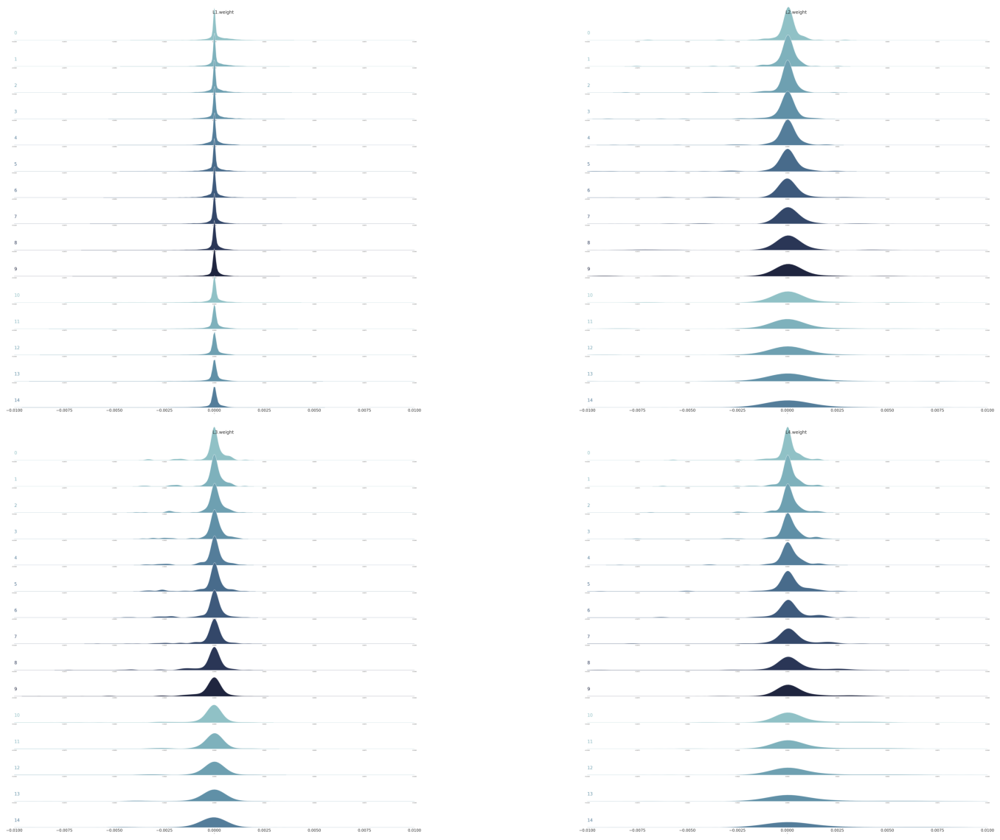
What do we get from these ridge plots?
The results are consistent with earlier plots. * Gradients are not diminishing between weight layers. * Gradients are shrinking between epochs, and we need to increase the learning rate for later epochs.